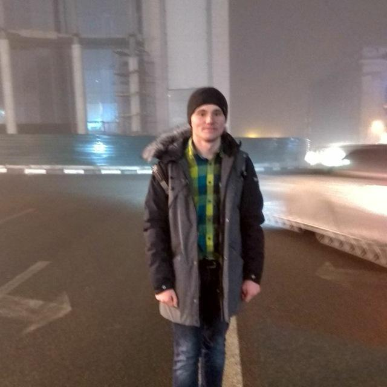
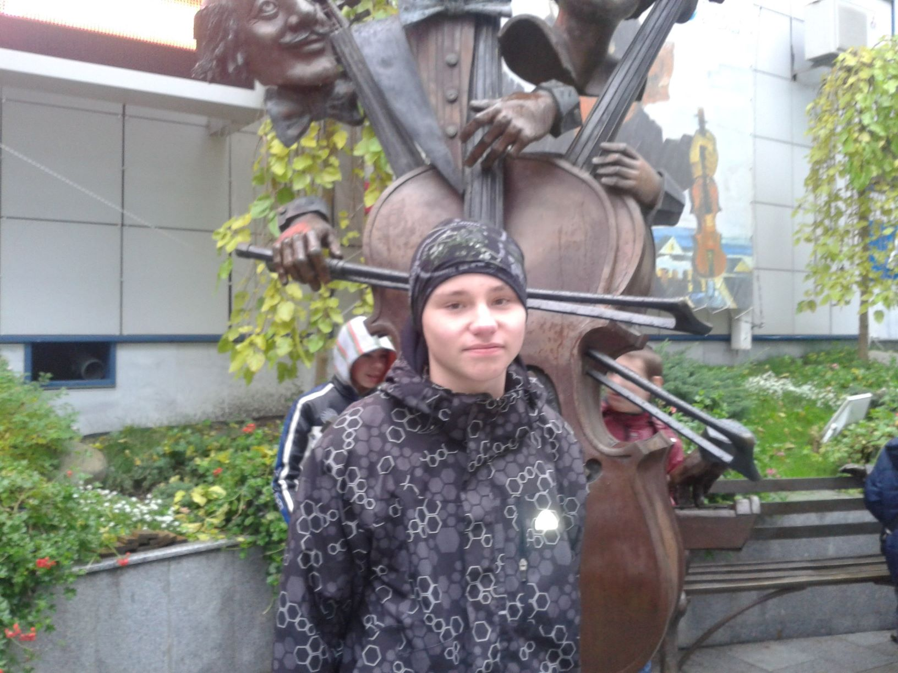

„Как видно, никому из нас жизнь легко не даётся. Ну и что ж, значит, нужно иметь настойчивость, а главное – уверенность в себе. Нужно верить, что ты на что-то ещё годен, и этого «что-то» нужно достигнуть во что бы то ни стало.“
Мария Складовская-Кюри
Фотогрфии в различных состояниях

В обычном положении
Недовольное и свирепое выражение лица

Удолетворение
Проживаю в Харькове, Московский район. Несколько фактов.
Московский район часто отождествляют с Салтовкой, что не совсем верно. Хотя, кого это волнует.....
Труба Салтовской котельни вынесена на большую высоту, дабы не чадить достопочтенной публике понаехавшим в новостройки селюкам. Из-за характерной формы напоинает совсем другую трубу. "Вылазки на ЧАЭС" -- популярное занятие у местных школьников конца нулевых.
Где-то рядом стоит своя телевышка, собственная высота - 125 метров + FM антенны, высота над уровнем моря - 161 метр, построена в 1963 году, задействована годом позднее. После ввода в эксплуатацию Харьковской радиомачты на Деревянко 1а в 1982 году имеет все шансы остаться не у дел, однако до сих пор передает сигнал аж 5ти fm-радиостанций. Использовалась для глушения "вражеских голосов".
Озеро имени Кирова на самом деле бывший карьер кирпичного завода. О том, что рядом находился кирпичный завод, свидетельствует старое название трамвайной остановки (уже ул. Муромская), расположенной неподалеку.
Это всё. "Легенды" о лавочках и "забавные анекдоты" о фонарных столбах здесь не нужны.